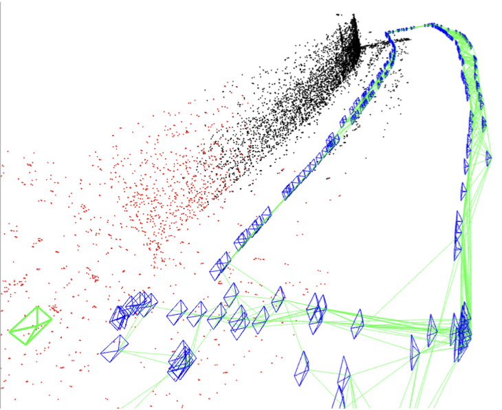
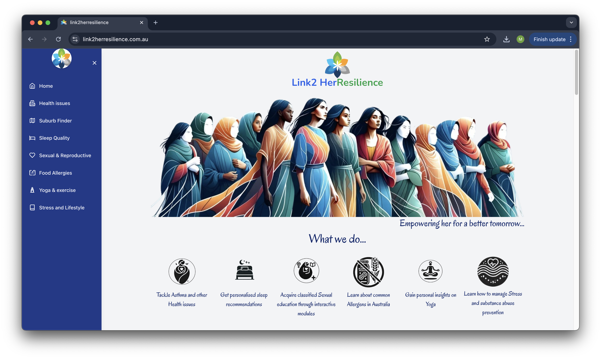

About
 I'm a final-year postgrad, pursuing Master of Artificial Intelligence (MAI) from Monash University, Melbourne, AUS.
Previously, I've been fortunate to be a part of the CMOS Image Sensor SW team at Samsung Research (Bangalore, INDIA) working on building cutting-edge mobile image sensors (such as industry-first 200 MP).
I've graduated from Indian Institute of Technology (IIT) Kanpur, INDIA with a Bachelor of Technology (BTech - Double Major program) in Mechanical Engineering & Electrical Engineering (ME-EE).
During my senior year in the undergrad, I've also collaborated with Prof Pratap Tokekar (Department of Computer Science, University of Maryland, USA), who supervised me on the research topic of aerial robotic vision.
I'm a final-year postgrad, pursuing Master of Artificial Intelligence (MAI) from Monash University, Melbourne, AUS.
Previously, I've been fortunate to be a part of the CMOS Image Sensor SW team at Samsung Research (Bangalore, INDIA) working on building cutting-edge mobile image sensors (such as industry-first 200 MP).
I've graduated from Indian Institute of Technology (IIT) Kanpur, INDIA with a Bachelor of Technology (BTech - Double Major program) in Mechanical Engineering & Electrical Engineering (ME-EE).
During my senior year in the undergrad, I've also collaborated with Prof Pratap Tokekar (Department of Computer Science, University of Maryland, USA), who supervised me on the research topic of aerial robotic vision.
Experience
Senior Software Engineer
System LSI, SAMSUNG RESEARCH (India)
Data Science Intern
Gramophone (India)
Research Scholar
Robotics Algorithms and Autonomous Systems (RAAS) Lab, Virginia Tech, USA
Research Intern
Swaayatt Robots (India)
| (July'19 - November'22) | |
|
> Devised a simpler & efficient Flicker Mitigation Algorithm for preview mode of super slow motion videos (480, 960 fps). > Developed & owned Bad Pixel Compensation, Remosiac & Upscaler related modules of firmware for various mobile image sensors (such as flagship Galaxy S series). |
|
| (May'18 - August'18) | |
|
> Deep Learning based auto-detection of crop diseases in RGB images. > Created Ask Anna: chat assistant (an information retrieval system). > Build Recommendation system for the personalized community posts. |
|
| (June'17 - March'18) | |
|
> Visual Odometry for UAVs to autonomously inspect bridges: - Comprehensively analyzed the integration of visual data with Inertial Measurement Units (IMUs) using various VIO/SLAM methods & was presented in the proceedings of the International Symposium of Experimental Robotics, ISER-2018. - Formulated a novel method to integrate 2D LiDAR data with the odometry pipeline as a feedback loop. |
 |
| (June'17 - August'18) | |
|
> Simultaneous Localization and Mapping for robots in warehouses: - Build highly robust, accurate SLAM algorithm (based on ORB SLAM2) for indoor environments & ultimately package it for self driving cars. - Proposed a system with the front end based on deep learning architecture for image (or feature) matching and the backend involves optimization & robust filtering of wrong loop closure detection. |
Projects
AI-powered web-applications to promote health & well-being in Australia
Team of 4, IE studio, Monash University
{Please contact to request login access to web-app}
[Product doc] [DS/AI ppt]
AI strategies for climate action initiatives
Virtual Internship, Oracle AustraliaMulti-Agent Reinforcement Learning (MARL) {with Game Theory}
Term Project, Monash UniversityVisual Question Answering (VQA)
Supervisor: Prof Harish Karnick, Dept. of CSE, IIT Kanpur [pdf]- Vision based Active Target TrackingSupervisor: Prof Mangal Kothari, Dept. of AE, IIT Kanpur [pdf]
- Modular Aerial Vehicle (ModAV)Supervisor: Prof Ashish Dutta, Dept. of ME, IIT Kanpur [poster]
| (August'24 - Present)  |
|
| (June'24 - July'24) | |
| (August'23 - November'23) | |
| (March'18 - April'18) | |
| (February'18 - April'18) | |
| (August'17 - April'18) |
Extracurricular Activities
- Short guest talk on AI in Project Management in FIT5057 (Monash University)
- Leadership & Volunteering, Monash Students' Association (MSA), Monash University
- English Connect, Monash University
- Senator (BT/BS Y14), Students' Gymkhana, IIT Kanpur
- Senior Executive, Science & Technology Council, IIT Kanpur
- Coordinator, Astronomy Club, IIT Kanpur
- Secretary, Fine Arts Club, IIT Kanpur